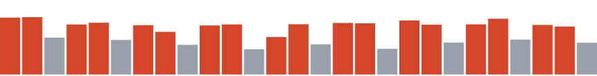
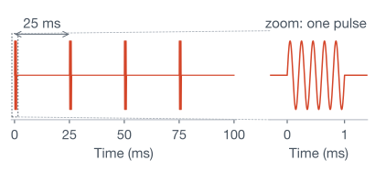
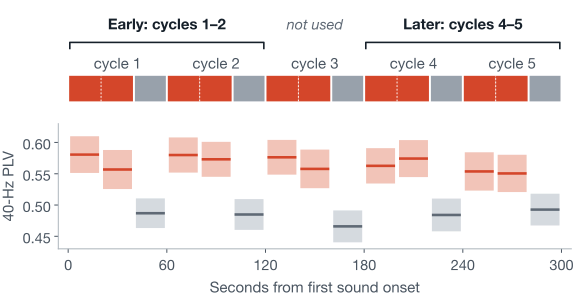
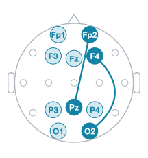
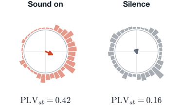
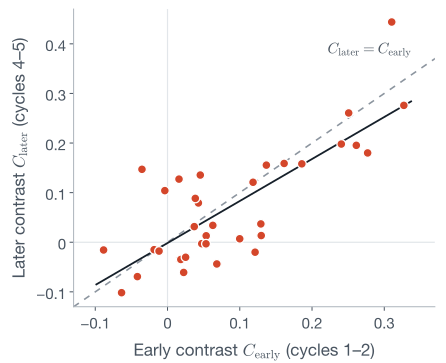
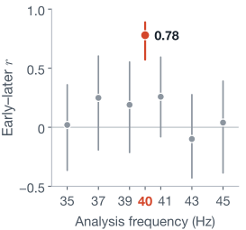
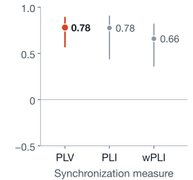
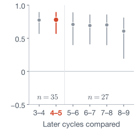

In mice, 40-Hz light and sound reduced Alzheimer’s-like pathology.1,2 Replication has been mixed,3 and benefit in patients is not established.4,5
Responses also differ between people: not every brain follows 40-Hz sound.6 Tailoring stimulation to a person would need a response measure taken early in the session.

A 1-ms, 5-kHz tone pip every 25 ms, so 40 pulses per second. Played from two loudspeakers, eyes open.6

sound silence
Bottom: group-mean 40-Hz phase-locking value (PLV) in each 20-s window, \(n = 35\); bands \(\pm 1\) SE across people. Each 40-s sound block gives two windows.
Public EEG from a memory clinic in Tehran (OpenNeuro ds005048)1
10 cognitively normal, 6 with mild cognitive impairment, 17 with Alzheimer’s, 2 unclassified
5 (\(n = 8\)) or 9 (\(n = 27\)) complete cycles per session

25 bipolar signals (frontal minus posterior), forming 200 pairs that share no electrode. Lines: the example pair, Fp2−Pz and F4−O2.

Median pair of sub-01 (largest early contrast), cycle 1. Bars: where the phase difference \(\Delta\phi_{ab}\) fell. Arrow length is the PLV (circle radius = 1).
Sound: mean of the block’s two 20-s windows. Silence: the 20 s right after.
At every frequency, raw PLV in block 1 correlated with the last three blocks \((0.87 \le r \le 0.93)\), even where sound barely changes it. It mostly reflects the person.

Each dot is one participant. Solid line: least-squares fit.
Ranks agree too (Spearman \(\rho = 0.688\)), and so do the values themselves (Lin’s \(\rho_c = 0.771\)).
No clear shift in the group mean: \(\langle C_{\text{later}} - C_{\text{early}} \rangle = -0.015\) \((p = 0.25)\).
Individuals still moved: 95% limits of agreement \([-0.16,\ +0.13]\).
Dots: early–later Pearson \(r\). Whiskers: 95% participant-bootstrap CIs. The early window is always cycles 1–2.

Six neighbors: \(-0.10 \le r \le 0.26\). Smallest gap to 40 Hz: \(\Delta r = 0.52\), 95% CI \([0.08,\ 0.65]\).

PLI and wPLI discount phase differences near \(0\) or \(\pm\pi\), the mark of one source reaching both signals.

They gave the highest \(r\); the rest gave \(0.61 \le r \le 0.77\), all \(p < 0.05\) after Bonferroni correction.
The contrast in the first two minutes tracked the contrast 3 to 5 minutes in (\(r = 0.78\)), most strongly at 40 Hz.
Retrospective: cycles 4–5 chosen after seeing the data.
Offline: cleaned using whole recordings.
No sham: silence always followed sound.
Scalp level: a shared response or artifact not ruled out.
Repeatability across sessions, use for guiding stimulation, and any link to clinical benefit.
A preregistered, real-time test with a sham or counterbalanced order and repeat sessions.
Data: Lahijanian, Aghajan & Vahabi, OpenNeuro ds005048 (CC0). Thank you to the participants and the dataset authors.